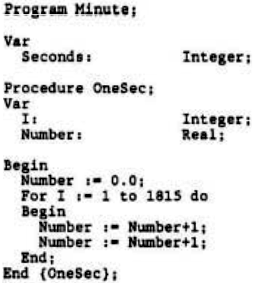

Scorpio News |
July–September 1987 – Volume 1. Issue 3. |
| Page 21 of 67 |
|---|
perform better, and would I hope allow continued use of my current well understood hardware and software. I hope they hurry up though, before the market vanishes.
So, as long as this magazine continues to support the 80-BUS systems to at least 50% in content, I would go along with the idea of supporting PC’s and Clones, on the basis of ‘Half a loaf’, and ‘If you can’t beat them’.
Yours faithfully, Clive Bowden, Truro, Cornwall.
Dear sir
You invited opinion on the inclusion of IBM-PC related articles in Scorpio News. After reading Vol 1 Issue 2, I feel my situation is fairly common. I bought a Nascom 2 kit in 1976 and built it up to a CP/M system. I work with IBM PS’s a lot, however, and was almost able to use the Nascom to help in my work, but not quite. Modem transfer is messy and slow compared to carrying a floppy disk home and back and even with the ability to read and write PC disks on the Nascom, I couldn’t use a lot of the PC software as it needs a true PC compatible machine to run (I didn’t think a GM888 would help, although I have seen so little about it). I ended up buying a PC AT clone. I do still use the Nascom in areas that I see not merit in upgrading to the PC (I have not yet tried Z80MU, the MS-DOS CP/M-80 emulation program), but the PC has become my mainstream machine.
Other than helping with work, my interests in the PC are just as in the Nascom. I want to know that makes it tick and how I can get it to do what I want. The articles about how and why the system worked (written by people who were genuinely interested) were, for me, a great strength of 80-BUS News. I have not found an equivalent for the PC.
I feel, therefore, that such articles should be included, PC’s being the machines the readership seems to be migrating to. As a pure 80-BUS magazine I feel Scorpio News will not survive long term becoming, little by little, less relevant to the readers’ activities. Similarly, it should not be a pure IBM PC magazine. I think a combination would best reflect the way the readership appears to be going.
Continuing the benchmark theme of previous issues, I was interested in the relative speeds of the different PC’s (and where the Nascom fitted in) and have some results from a simple test program that may be of interest. The program was written in TURBO Pascal (the only compiler I had for both CP/M and PC-DOS) and was designed to take exactly 60 seconds on a 8 MHz 8088.

| Page 21 of 67 |
|---|